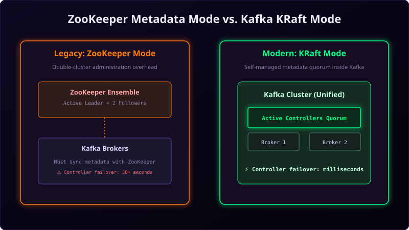

For over a decade, running an Apache Kafka cluster meant running two separate systems: the **Kafka Brokers** themselves and a separate **ZooKeeper Cluster** to manage metadata, broker registrations, and leader elections.
While ZooKeeper served Kafka well, it introduced significant operational complexity and scalability bottlenecks. In modern Kafka versions (3.x and 4.x), ZooKeeper has been completely replaced by **KRaft** (Kafka Raft Metadata Mode). Let's review the architectural reasons behind this massive shift.

Imagine running a chain store:
- ZooKeeper Mode: You hire a third-party consulting agency (ZooKeeper) to sit in a separate office across the street. Every time you open a new register (partition), hire an employee (broker), or select a supervisor (leader), you must walk across the street and log it in the consultant's ledger. It is slow and expensive.
- KRaft Mode: You appoint a team of senior staff (Controller Brokers) inside your own shop to manage these tasks. They sit in the main office, talk directly to the cashiers, and manage the ledger themselves. Everything stays in one building, simplifying operations.
Three Major Limits of ZooKeeper
1. Operational Complexity
Managing ZooKeeper meant managing a separate software stack with its own configuration files, security model, firewall rules, and monitoring dashboard systems. Cluster administrators had to double their maintenance workloads.
2. Scalability Bottleneck
Every time a Kafka broker elected a partition leader, it had to sync that metadata change to ZooKeeper. When clusters grew to hundreds of thousands of partitions, ZooKeeper became a bottleneck, limiting the maximum partition scale of a single cluster.
3. Long Failover Times
If the Kafka cluster controller broker crashed, the remaining brokers had to talk to ZooKeeper to elect a new controller and download the entire metadata state of the cluster. In large systems, this failover process could take 30 to 45 seconds, during which writes were blocked.
How KRaft Mode Solves These Issues
KRaft integrates metadata management directly inside Kafka using a Raft-based consensus protocol:
- Unified Cluster: You configure certain Kafka brokers to act as controllers. They manage metadata directly, removing ZooKeeper entirely.
- Sub-Second Failover: Because metadata is stored directly inside the controller quorum, if an active controller crashes, a backup controller is elected in milliseconds, preventing system hangs.
- Vastly Improved Scale: KRaft allows a single cluster to scale to **millions of partitions** because it bypasses external serialization bottlenecks.
- Unified Security: A single security policy controls client traffic and metadata sync operations.
Conclusion
KRaft mode is the future of Apache Kafka. By removing ZooKeeper, Kafka has transitioned from a dual-dependency system into a self-contained, high-performance distributed streaming engine. KRaft makes cluster operations simpler, safer, and ready to scale.